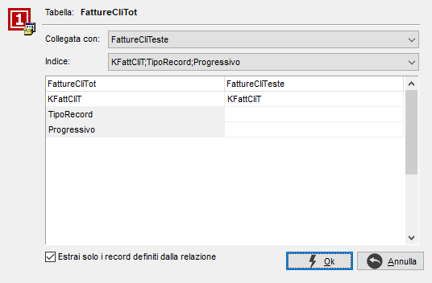

In questa finestra è possibile definire le relazioni che legano la tabella selezionata a quella già presente sulla statistica; in questo modo i campi della nuova tabella saranno resi disponibili per la composizione della statistica. Terminata la fase di associazione si ritorna al disegno della statistica.

E' possibile definire associazione per indice o senza indice, ad esempio per legare una view ad una tabella; nella colonna di destra saranno presenti caselle a discesa per selezionare i campi da associare ai campi della tabella principale, nella colonna di sinistra; è possibile inserire delle costanti al posto dei nomi dei campi, precedute dal carattere '#', per definire nell'associazione dei valori fissi (ad esempio in corrispondenza del campo IdContoTp un valore fisso #'CL' per filtrare solo i record con questo valore nel campo).
La casella 'Estrai solo i record definiti dalla relazione' se selezionata consente di estrarre dalle tabelle relazionate solo i dati presenti in entrambe le tabelle (inner join), altrimenti saranno selezionati anche i record presenti soltanto in una delle tabelle (left join).